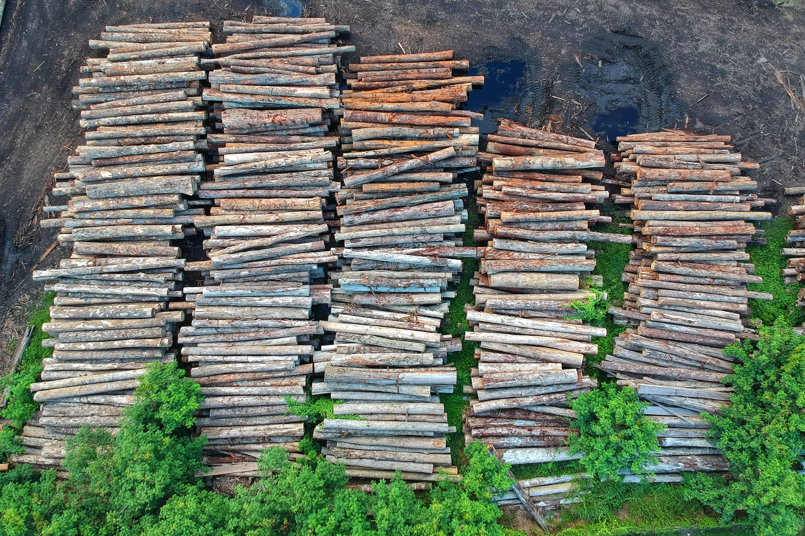

We are a Non-profit organisation trying to help fight back against Climate Change & Restore Bio-Diveristy across the world, Established in 2022 with the help of like minded people , We began our journey to restore mother nature globally and to make the Earth a greener & cleaner place to live for our future selves.
Deforestation, Its the clearing or thinning of forests by humans. Deforestation represents one of the largest issues in global land use. Estimates of deforestation traditionally are based on the area of forest cleared for human use, including removal of the trees for wood products and for croplands and grazing lands and fuel.
Our Future together is to Repopulate over 10 Million Tree's by 2026 Globally with the help from people & business's who want to make great change to our forests/wildlife ,We will have by then restored Thousands of acres to rehabit wild life with new home's and reduces carbon dioxide from our air.
Donating to our project will be the best help we can get as we can not do this without like minded individuals to spread the awarence & to create future forest eco friendly areas for our wildlife and for the future ahead of us.
Gift a Tree - when you gift a tree you'll be recieve the location and the details of what type of tree that was planted & a certificate.
Donate Land - By doing this you'll be not only creating a nature presevered area you'll also receive a certificate and will have the location remebered by you & what great help you had on our climate change wild life preserve.
Volunteer -You can do your part to turn the tides. Right now, you can volunteer to plant trees around the globe, from the United States to Thailand to all across Europe. By doing so, you’ll make the world a greener, healthier place. And that will benefit people and animals. In this guide, we’ll cover how you can volunteer to plant trees abroad. Before you know, you’ll be signed up for a tree planting volunteer program and en route to the adventure of a lifetime.
After signing up to our programe you’ll have the option too Donate to us , Gift a tree , Volunteer.